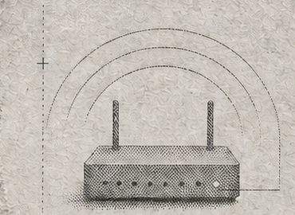

OpenWrt / eamonxg feed
signal remains

| Feed软件源 | signed已签名 | usign (opkg) · EC (apk)opkg 用 usign · apk 用 EC | ··· |
| Arch架构 | universal通用 | all · one build, every device架构名 all · 一份产物通用所有设备 | ··· |
| Channels通道 | 2 active2 条 | snapshots · releases快照 snapshots · 稳定 releases | ··· |
01Quick install一键安装
The script detects opkg / apk from the on-disk package database, imports the signing key and adds the feed. 脚本按包管理器数据库识别 opkg / apk，导入签名公钥并写入源配置。
Snapshot快照版 daily builds from the default branch 默认分支每日构建（默认通道）
$ wget -qO- https://__FEED_HOST__/install.sh | shStable稳定版 latest tagged releases, updates only when a release is cut 各包最新发布 tag，仅发版时更新
$ wget -qO- https://__FEED_HOST__/install.sh | CHANNEL=releases shSnapshots carry the newest unreleased changes and may occasionally break. Both channels share one feed name — pick exactly one. 快照版包含未发布的最新改动，偶尔可能不稳定；两个通道源名相同，只能二选一。
02Manual setup手动安装
Three steps: import the signing key → add one of the two feeds → update the package index. 三步：导入公钥 → 添加源（快照 / 稳定二选一）→ 更新索引。
opkg OpenWrt ≤ 24.10
# 1. Import the signing key (the file name MUST be the key fingerprint)
$ wget -qO /etc/opkg/keys/__USIGN_FPR__ https://__FEED_HOST__/eamonxg.pub
# 2a. Add the snapshot feed (default)
$ echo "src/gz eamonxg https://__FEED_HOST__/snapshots/opkg" >> /etc/opkg/customfeeds.conf
# 2b. Or: add the stable feed
$ echo "src/gz eamonxg https://__FEED_HOST__/releases/opkg" >> /etc/opkg/customfeeds.conf
# 3. Update the index, then install any feed package
$ opkg update
$ opkg install luci-theme-aurora# 1. 导入公钥（文件名必须是密钥指纹）
$ wget -qO /etc/opkg/keys/__USIGN_FPR__ https://__FEED_HOST__/eamonxg.pub
# 2a. 添加快照版源（默认）
$ echo "src/gz eamonxg https://__FEED_HOST__/snapshots/opkg" >> /etc/opkg/customfeeds.conf
# 2b. 或：添加稳定版源
$ echo "src/gz eamonxg https://__FEED_HOST__/releases/opkg" >> /etc/opkg/customfeeds.conf
# 3. 更新索引后安装任意包
$ opkg update
$ opkg install luci-theme-auroraapk OpenWrt ≥ 25.12
# 1. Import the signing key
$ wget -qO /etc/apk/keys/eamonxg.pem https://__FEED_HOST__/eamonxg.pem
# 2a. Add the snapshot feed (default)
$ echo "https://__FEED_HOST__/snapshots/apk/packages.adb" >> /etc/apk/repositories.d/customfeeds.list
# 2b. Or: add the stable feed
$ echo "https://__FEED_HOST__/releases/apk/packages.adb" >> /etc/apk/repositories.d/customfeeds.list
# 3. Update the index, then install any feed package
$ apk update
$ apk add luci-theme-aurora# 1. 导入公钥
$ wget -qO /etc/apk/keys/eamonxg.pem https://__FEED_HOST__/eamonxg.pem
# 2a. 添加快照版源（默认）
$ echo "https://__FEED_HOST__/snapshots/apk/packages.adb" >> /etc/apk/repositories.d/customfeeds.list
# 2b. 或：添加稳定版源
$ echo "https://__FEED_HOST__/releases/apk/packages.adb" >> /etc/apk/repositories.d/customfeeds.list
# 3. 更新索引后安装任意包
$ apk update
$ apk add luci-theme-aurora03Packages版本表
Loading manifest.json…加载 manifest.json…